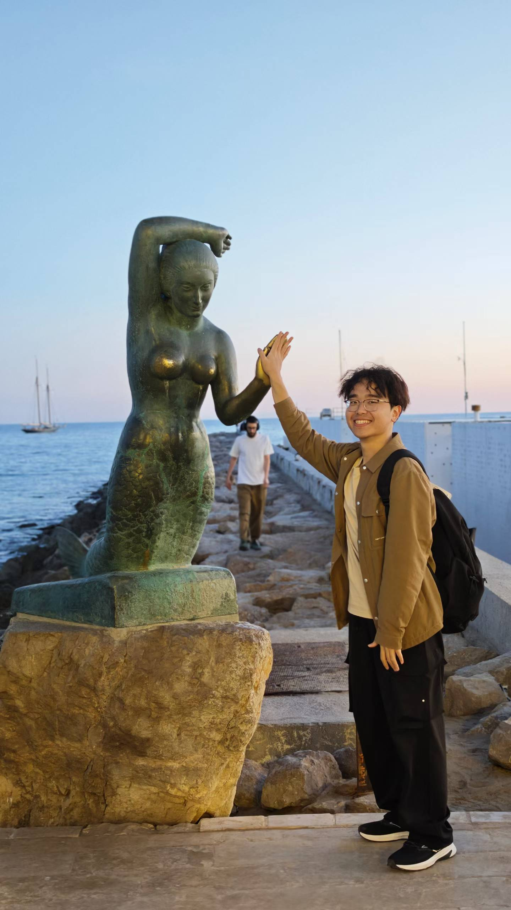

Human-Computer Interaction
Designing and evaluating interactive systems that support human cognition, learning, and experience.
HCI / XR / AI / Spatial Learning
PhD Student in Human-Computer Interaction, Extended Reality, and AI
Designing interactive and intelligent technologies for spatial learning, cognition, and human skill development.

About
I am currently a PhD student at the University of Auckland, New Zealand. My PhD is fully funded through a Smart Ideas project supported by MBIE.
I am jointly supervised by Associate Professor Burkhard Wuensche and Professor Mark Billinghurst, with each supervisor contributing equally to my PhD supervision. I am affiliated with both the Graphics Lab and the Empathic Computing Lab.
Before starting my PhD, I completed a Master of Computer Science at the University of Sydney, where I worked in the AID-Lab under the supervision of Dr Brandon Syiem and Dr Zhanna Sarsenbayeva. I received my Bachelor's degree in Software Engineering from Nanchang University.
My research interests include Human-Computer Interaction, Extended Reality and Mixed Reality, Artificial Intelligence, Large Language Models, multimodal AI, and spatial skills training. I am particularly interested in how interactive and intelligent technologies can be designed to support spatial learning, cognition, and human skill development.
In addition to applied HCI and XR research, I am also interested in AI and LLM algorithms, especially efficient, reliable, and human-centred methods for large language models and multimodal systems. My current research explores immersive environments, AI-driven systems, and adaptive interaction techniques for training and assessing spatial skills in educational contexts.
Research Interests
Designing and evaluating interactive systems that support human cognition, learning, and experience.
Developing and studying intelligent systems that are efficient, reliable, and human-centred.
Designing adaptive and interactive tools for training spatial reasoning, STEM-related skills, and human skill development.
Exploring how virtual and physical environments shape perception, attention, interaction, and spatial behaviour.
Education
The University of Auckland, New Zealand
The University of Sydney, Australia
Nanchang University, China
Selected Research Experience
This project investigates how physical surroundings, virtual depth cues, and task demands shape visual search and spatial regularity memory in mixed reality. It examines how users search for virtual targets in complex environments and how repeated spatial configurations influence performance.
Led the entire project, designing and executing all stages from conception to completion.
This project explores uncertainty-guided local visual refinement for reducing object hallucination in multimodal large language models.
Contributed to idea refinement, manuscript writing and revision, experimental design, and implementation.
Publications

Lefan Lai, Tinghui Li, Zhanna Sarsenbayeva, Brandon Victor Syiem.
ACM CHI Conference on Human Factors in Computing Systems, CHI 2026.
View ACM DOIContact
I would be very happy to discuss extended reality, AI, HCI, and spatial learning, and I welcome research collaborations, project ideas, and thoughtful academic conversations.